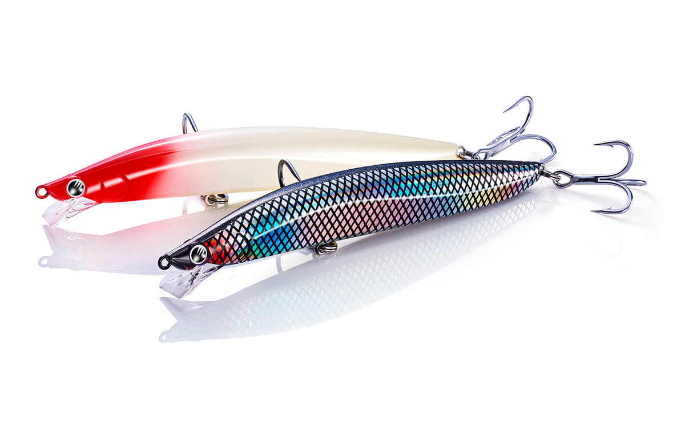
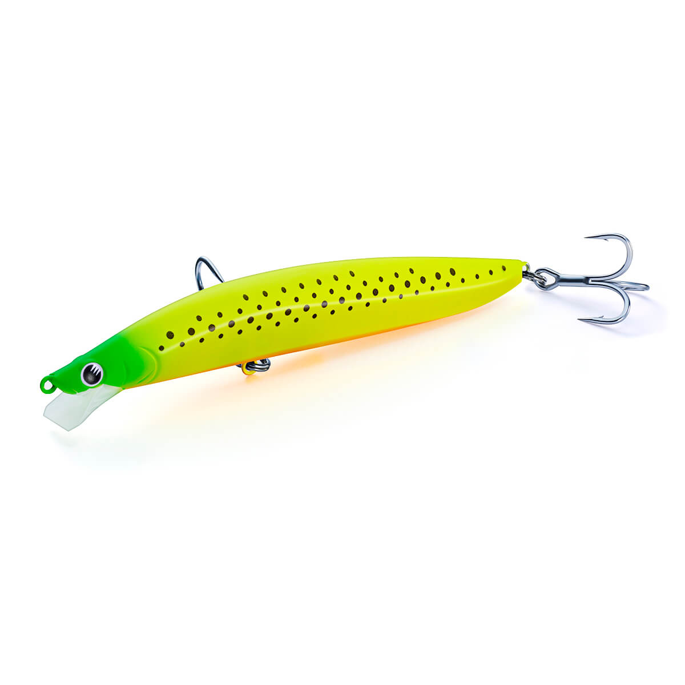
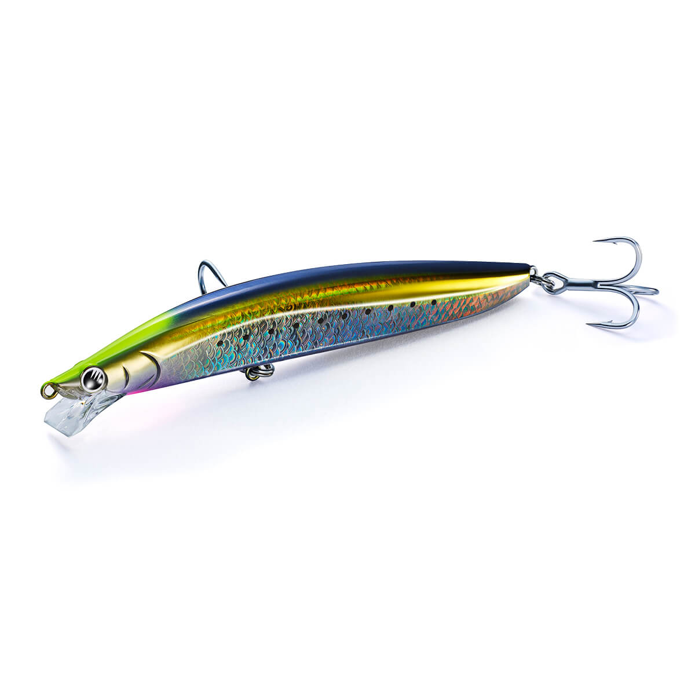
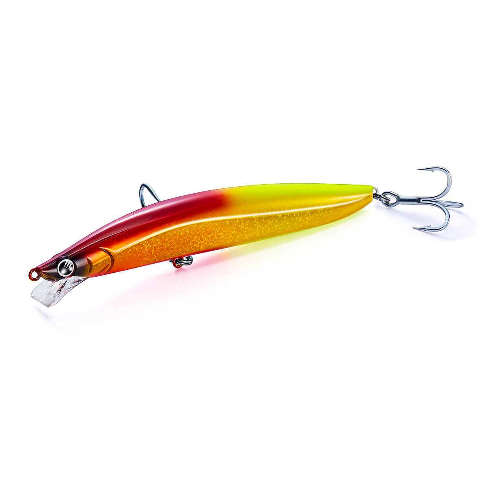
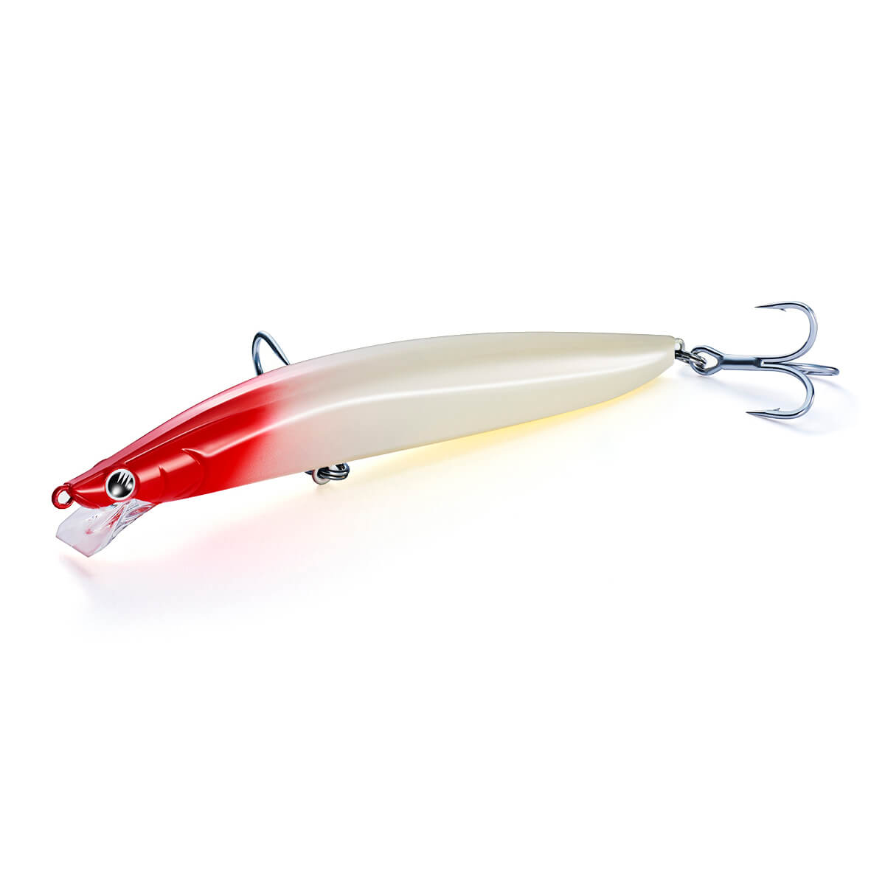
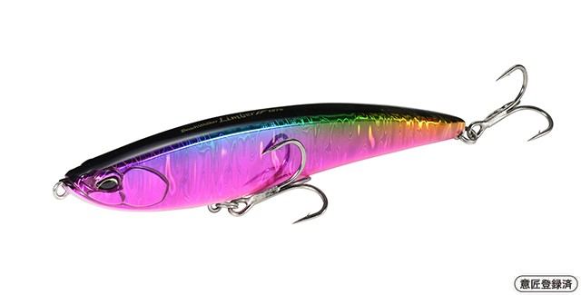

アスリート+ 16FVG モンスターエディション
（Athlete+ 16FVG Monster Edition）
アスリート+ 16FVG モンスターエディション（Athlete+ 16FVG Monster Edition）はJackson（ジャクソン）のフローティングミノーです。
アスリート＋シリーズから登場した大物専用モデルで、広大なサーフや河口域に潜むモンスター級ターゲットを射程に収めるビッグフィッシュ専用ルアー。向かい風でも崩れない遠投性能と、スローで効く可変ロールアクションが最大の魅力です。

画像出典:Jackson公式HP
スペック
- メーカー
- Jackson（ジャクソン）
- タイプ
- フローティングミノー
- 全長
- 160mm
- 自重
- 39g
- フック・リング
- BKK Fangs-63UA #1/0
- ターゲット
- サーフ・河口域の大型魚（ヒラメ・シーバスなど）
- 価格
- 3,135円（税込）
▼今すぐチェック
アスリート+ 16FVG モンスターエディションの特徴
沖のブレイクや潮目まで届く飛距離と、大物を誘うスローアクションに振り切ったビッグミノー
-
大口径タングステン重心移動とボルテックスジェネレーター搭載リップ
遠投性能を高めた大口径タングステン重心移動システムと、ボルテックスジェネレーターを搭載したリップにより、向かい風でも安定した飛行姿勢を実現。沖のブレイクラインや潮目までストレスなく届かせられる。
-
速度で変化する可変アクション＋フラットサイドの水押し
超低速域ではヨタヨタとした水押し、低速域ではロールが加わった「ヨタヨタロール」、中速域以降は安定したロールへと変化。フラットサイドボディが生む水押し波動とフラッシングが、ターゲットの捕食本能を刺激する。
-
あえて貫通ワイヤー非採用でもモンスター対応の強度
ワイヤーの重みによる重心固定を避け、スローリトリーブ時のアクションを最優先して貫通ワイヤーを非採用に。その分アイリングやボディ強度を徹底的に見直し、フックにはBKK Fangs-63UA #1/0を装備して大物とのファイトに備えている。
アスリート+ 16FVG モンスターエディションの使い方
基本はスローなただ巻き。このルアーはスローリトリーブ時のアクションを最優先に設計されているため、まずは超低速〜低速でヨタヨタとした水押しやヨタヨタロールを出し、大物にじっくり口を使わせるのが基本の組み立て。
反応がない時はリトリーブ速度を中速まで上げ、安定したロールアクションでフラッシングを効かせて広範囲を探る。フローティングなので、ブレイクや潮目を通過させたあとにリトリーブを止めて浮かせる「間」を入れるのも有効です。
アスリート+ 16FVG モンスターエディションの得意な状況
広大なサーフや河口域で、沖のブレイクラインや潮目に付く大型魚を狙う状況が最大の出番。
向かい風で通常のミノーでは飛距離が出ない日や、大型ベイトが入って小さいルアーでは存在感が足りない時にも強い。数よりもサイズを狙い、1本の大物に賭けたい場面で選びたい1本です。
ワンポイント
160mm・39gのボディとフック#1/0を扱うため、タックルは大型ミノーをフルキャストできる強めのロッドとPEラインを合わせるのがおすすめです。
巻き速度でアクションが段階的に変わるので、同じコースを速度だけ変えて通し、その日反応の良いアクションを探すと絞り込みやすくなります。
オススメカラー
アスリート+ 16FVG モンスターエディションは全6色展開。サーフ・河口の大物狙いでオススメのカラーを厳選して紹介します。

APK アピールコノシロ（グロー仕様）大型ベイトのコノシロパターンにマッチ。グロー入りでローライト時にも存在感を出せる。

GRI 銀鱗イワシ（ケイムラ仕様）イワシパターンの基準カラー。ケイムラで日中のアピールも補える。

MZG マズメグリッター大物のチャンスタイムとなる朝夕マズメに投入したい1色。

RDM レッドムーン（グロー仕様）赤系＋グローで、濁り潮や暗い時間帯のシルエットアピールに。
画像出典:Jackson公式HP
アスリート+ 16FVG モンスターエディションに似ているルアー
-
 カゲロウ124F
メガバス
詳細はこちら＞
カゲロウ124F
メガバス
詳細はこちら＞
全長124mm・自重22gのフローティングシャローランナー。重心移動による遠投性能と、スローで効く揺らぎアクションでシーバス・ヒラメの大型を狙う考え方がアスリート+ 16FVG モンスターエディションと共通する。
-

リンバーiF127S DUO 詳細はこちら＞全長127mmのフラットフィッシュ向けミノー。フラットな面積を広げてアピール力を高めた設計で、サーフの大型魚を狙うという使いどころが重なる1本。